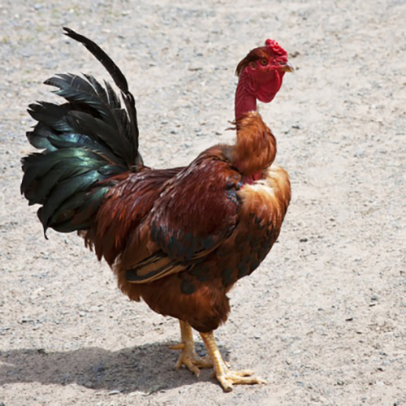

Task 1: Introduction to Poultry
Click 'NEXT' to start.
Click 'NEXT' to start.
Poultry types – poultry is the generic term given to all domesticated feathered birds (fowl) used for meat or egg production. Traditionally this comprises both land-based fowl such as:
As well as water-based fowl such as:
Game birds are often bred nowadays and many preparation techniques are similar to poultry but cooking must be adjusted to allow for the drier texture of the meat
| Type | Description | Average Portion Yield | |
|---|---|---|---|
| Poussin | 4-6 week old bird | 1 | |
| Double Poussin | 6 week old bird | 2 | |
| Roasting Chicken | 12-14 week old bird | 4–8 | |
| Boiling Fowl | Older bird over 14 weeks | 6–8 |  |
| Large Roasting Chicken | Young Fattened Cockerel | 6–8 |
Poultry consumption has increased dramatically in the last few decades, thanks to marketeers promoting poultry as being a low fat menu option, changes in eating habits and the relatively cheap price of poultry.
The availability of prepared cuts or convenience products with quick preparation and cooking times, e.g. skinned portioned chicken breast or frozen chicken cordon bleu, has also played a role in the increased consumption.
| Fresh Poultry | Frozen Poultry |
|---|---|
|
|

The legs are more flavoursome and are the dark meat in poultry.

|
||
| Whole Chicken Leg | Chicken Drumstick | Chicken Thigh |
| Chicken Sûpreme Skinless | Chicken Breast Skin on | Chicken Wings |
Pheasant
The pheasant is the most plentiful of Britain's game species and the best known. Oven-ready pheasants can be bought from game dealers, butchers or supermarkets and are available fresh from October to February, or frozen when out of season.
Almost any chicken recipe can be adapted to pheasant. But be warned pheasant has far less fat than chicken and can become dried out when in the oven. To avoid this, either stew or braise the pheasant, or use bacon and/or butter to baste it. Young pheasants are delicious roasted; older pheasants are best pot-roasted or used in casseroles.
One pheasant will serve two to three people depending on its size and can be served slightly pink.
Partridge
Partridge have a subtle flavour and, in the case of young birds, are best served simply roasted, pan-fried of grilled. There are two species in Britain - the native grey, often called the English, and the French or red-legged.
Partridge are small birds and one will generally serve only one person, though larger birds may be enough for two.
The open season for grey and red-legged partridge shooting runs from September 1st to February 1st; with October and November being the best time for eating this delicious game bird.
Grouse
All year round, and much sought after by top chefs and gourmets around the world, the red grouse is a completely wild bird unique to Britain. Living exclusively on the heather moorlands of the UK, each bird can usually be traced back to the very Estate where it fledged and matured. Very fast on the wing, reaching speeds of up to 80 mph, it is also agile creating very lean dark brown meat bursting with flavour. It is a seasonal delicacy for all Brits to be proud of and one which leading restaurateurs vie to be the first to bring to the table each August.
The 200 year-old tradition of shooting grouse is internationally recognised as one of the world’s most challenging countryside sports. People visit the moors of Britain from all over the world either to shoot grouse or to marvel at the open expanses that buzz with wildlife during the breeding season and turn purple in August.
There are 250 grouse moors in the UK. The grouse shooting season is very short lasting just 16 weeks. It starts on 12th August and continues until 10th December. Grouse shooting only takes place if there are enough birds on the moors to ensure a viable future population and only the surplus is harvested by shooting. The red grouse is a completely wild bird and only found in Britain where its rare heather habitat is managed by gamekeepers
Knowing if your bird is this year’s parent or young, can help you decide how to cook it. The young will be 3-4 months old if bought in August/September and the flesh is more tender and less strongly flavoured and can be pan-fried or roasted, whereas older birds need slow cooking to release the more intense flavour and soften the meat. In the feather, an ‘old’ grouse’s weight can be supported by its beak when hung from your fingers and its claws do not bend under pressure
Duck or Goose
The majority of duck and all the geese found in the supermarkets are farmed reared. However getting your hands on wild duck and geese is more than worth it, with the taste being completely different.
The duck that can be shot during the open season include; gadwall, goldeneye, mallard, pintail, pochard, shoveler, teal, tufted duck and the wigeon.
The goose that can be shot during the same open season include; canada geese, greylag, pink-footed and white-fronted geese.
The majority of oven ready duck is farmed duck from overseas, however a visit to the butchers through the shooting season and you will find a variety of wild duck.
Woodcock
The woodcock is a wader, enjoying wet and marshy land, in particular in Wales. They are migrating birds flying from the UK all the way to Siberia in Russia, following the winter.
Much like snipe, woodcock are not drawn before cooking, leaving the innards in helps with the delicious flavour. We are in the process of producing some delicious woodcock recipes at the moment.
Snipe
The snipe is a wading bird, similar in ecology and habitat to the woodcock, although it is smaller in size. Their flight pattern is erratic to say the least giving them a sporting chance of evading even the sharpest of shooters. It is a truly wild bird and you will discover that in the taste of them.
Snipe are extremely small and you will have to look at almost having two snipe per person if for the main course.
Like woodcock, leave the innards in the snipe when cooking to really get the most out of the meat.
Chickens
The information in this slide has been sourced from the British Poultry Club of the UK. Their website and further information can be gained at: http://www.poultryclub.org/breed-gallery/chickens/
As a chef, it is important that we understand that there are a variety of different poultry breeds that are available to purchase; each with its own distinct uniqueness in terms of flavour, size and colour, laying different types of eggs. Not all poultry is suitable for use in the kitchen, many poultry breeds are displayed and shown in agriculture shows and will never be used in the kitchen due to the nature of their breed.
| Chicken | Description |
|---|---|
| Cornish Hen | Young Bird (5-6 Weeks), a very tender bird |
| Fryer or Broiler | Young Bird (9-12 Weeks), tender bird |
| Roaster | Young Bird (3-5 Weeks), tender bird |
| Capon | Male chicken, under 10 months old, very tender |
| Stewer | Mature Female, over 10 months old, tough |
This slide will show you some of the breeds found in the UK.
| Name | Picture | Description |
|---|---|---|
| Araucanas | Araucanas are prolific layers of strong - shelled eggs, blue or green eggs having been reported from South America from the mid - | |
| Cochin | The Cochin is of an immense size and table properties. Moreover, it was an excellent layer. | |
| Leghorn | In commercial circles the white Leghorn has figured prominently in the establishment of high egg-producing hybrids. | |
| Old English Pheasant Fowl | It has a meaty breast for a light breed, and has always been popular with farmers. | |
| Silkie fowls | The breed provides reliable broodies for the eggs of large fowl or bantams. | |
| White-faced black Spanish | The White-faced black Spanish are good layer of large white eggs. | |
| Transylvanian Naked Neck |  | There are now several naked-necked broiler hybrids, a good example of how even the most unexpected old breed can be useful in today’s poultry industry. |
You have now reached the end of this unit and are ready to progress to the media content or quiz. You can do this by clicking on the tabs below. Remember that you can revisit this unit to revise at any time.